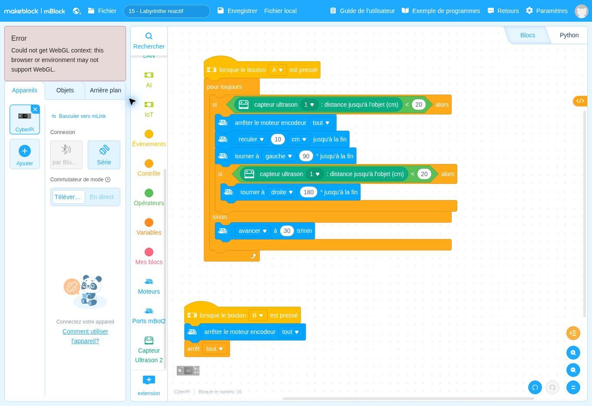

lorsque le bouton A ▾ est presséDépart
Ce que fait ce bloc : Bloc de départ : le programme se lance quand on appuie sur le bouton A du CyberPi, comme dans les fiches précédentes.
Pourquoi il est là : Vous choisissez le moment du départ.
Comment un robot peut-il se sortir d’un couloir sans carte ?
Avant de regarder le programme, écrivez en une phrase ce que vous pensez que le robot va faire. Lancement : A lance le programme ; B arrête le robot.
Se tromper ici est utile : c’est ce qui fait apprendre.
Voici le programme en français. Les lignes décalées vers la droite sont à l’intérieur d’une répétition ou d’un choix.
Quand j’appuie sur A :
je répète sans fin :
si la distance mesurée est inférieure à 20 cm :
1. j’arrête les moteurs ; je recule de 10 cm ; je tourne de 90° ;
2. si la distance est encore inférieure à 20 cm :
je tourne de 180° de l’autre côté ;
sinon :
j’avance à 30 tr/min.
Quand j’appuie sur B :
j’arrête les moteurs et tous les scripts.
DépartContrôleAction du robotInformationÉcranMémoireCalcul
Ce que fait ce bloc : Bloc de départ : le programme se lance quand on appuie sur le bouton A du CyberPi, comme dans les fiches précédentes.
Pourquoi il est là : Vous choisissez le moment du départ.
Ce que fait ce bloc : Répète sans fin ce qui est à l’intérieur.
Pourquoi il est là : Le robot teste son environnement en permanence.
Ce que fait ce bloc : Décision principale : mur proche ou non.
Pourquoi il est là : Le robot n’a pas de carte, il réagit seulement à ce qu’il mesure maintenant : c’est une stratégie « réactive ».
Mot à connaître. « Réactive » = le robot réagit à la situation présente, sans mémoire ni plan.
Ce que fait ce bloc : Arrête les moteurs.
Pourquoi il est là : Il faut s’arrêter avant de manœuvrer.
Ce que fait ce bloc : Recule de 10 cm.
Pourquoi il est là : Prendre de la distance avec le mur pour pouvoir tourner.
Ce que fait ce bloc : Tourne d’un quart de tour pour regarder ailleurs.
Pourquoi il est là : Première tentative : tenter de passer sur le côté.
Ce que fait ce bloc : Deuxième vérification : après ce virage, est-ce encore bloqué ?
Pourquoi il est là : Si c’est encore bloqué, c’est sans doute un cul-de-sac : il faut changer de stratégie.
Ce que fait ce bloc : Fait un demi-tour vers la droite.
Pourquoi il est là : Après le virage à gauche, un demi-tour vers la droite oriente le robot vers l’autre côté, vers la sortie possible.
À savoir. Depuis la direction d’origine : gauche 90°, puis droite 180° = au final 90° vers la droite.
Ce que fait ce bloc : Si le passage est libre au premier test (pas de mur proche).
Pourquoi il est là : Cas normal : avancer.
Ce que fait ce bloc : Roule vers l’avant.
Pourquoi il est là : Tant que rien ne bloque, le robot avance.
Ce que fait ce bloc : Départ de l’arrêt.
Pourquoi il est là : Pour stopper à tout moment.
Ce que fait ce bloc : Coupe les moteurs.
Pourquoi il est là : Le robot s’immobilise.
Ce que fait ce bloc : Arrête tous les scripts.
Pourquoi il est là : Sans cela, la boucle relancerait les moteurs.
Autres solutions : page Besoin d’aide ?
Changez un seul élément, prévoyez le résultat, puis vérifiez avec le robot.
Cette partie est réservée au formateur. Saisissez le code formateur pour l’ouvrir.
Code incorrect.